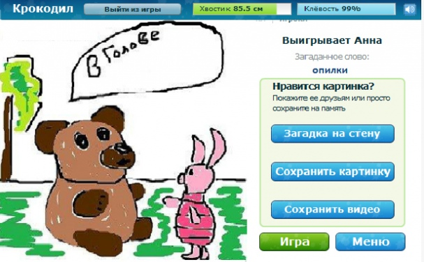
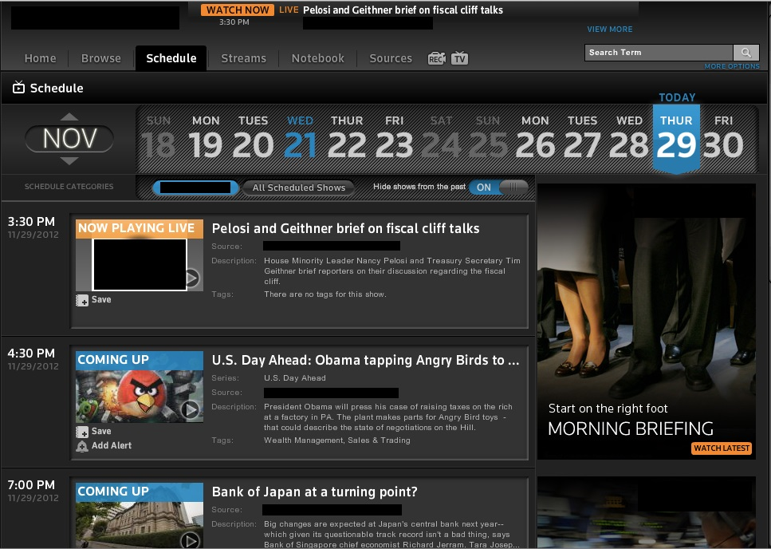
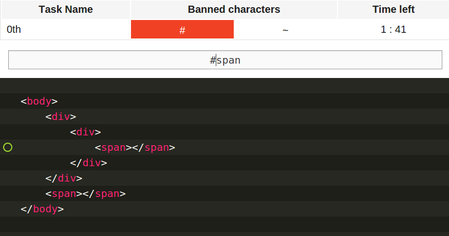
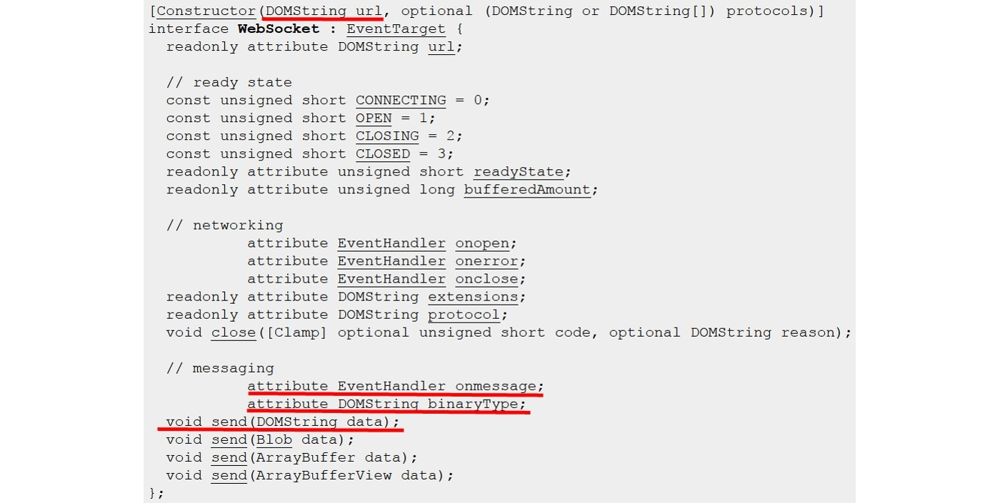
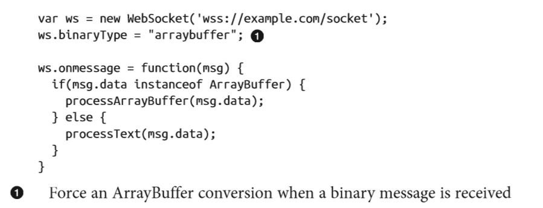
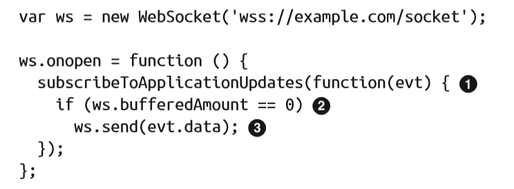
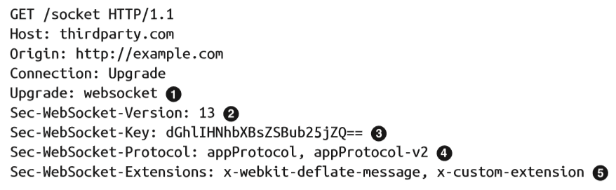
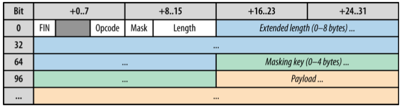
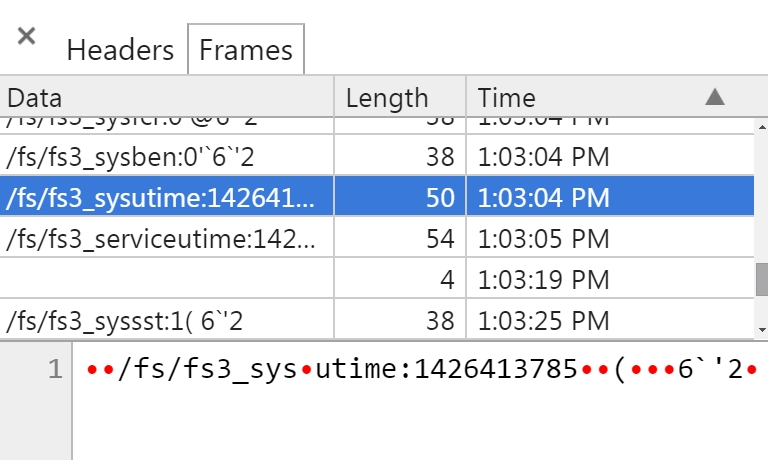

RealTime. WebSockets.


Промедление смерти подобно
Eng: Danger in delay
Agenda
- Применение realtime
- Обзор технологий и инструментов
- Подробнее о веб-сокетах
- Live coding. Создание приложения на NodeJS
Биржевая и финансовая информация
Успех

Односекундное промедление

Спортивные события, ставки онлайн

Реальная история

Онлайн-игры

Крокодил онлайн
Соцсети, чаты
Breaking news
Collaboration stuff
CSS Quickdraw
WebSockets Challenge
Как было раньше?
Инструмент = Транспорт = HTTP

Polling. 2013
Polling в жизни
COMET

COMET
- Long Polling
- Бесконечный фрейм
- Http streaming
- Flash-объекты
- Java-апплеты
GIF-файл

Бесконечный GIF

Рубрика “No comments”
<meta http-equiv="refresh" content="60">
setInterval(function () {
location.reload();
}, 6000);
Realtime in HTML5
Web RTC
Server-Sent Events
WebSockets: protocol and API
WebSocket API
Basic Example

Receiving Binary Data
bufferedAmount
WebSocket Protocol
WebSocket Protocol Request
WebSocket Protocol Response

WebSocket Framing Layer
2015

f12 - Dev Tools

Frames
Supported clients

Supported servers

Traffic Charts


FAQ
Would it be able to handle 1,000,000 concurrent connections?
And the answer is...
“On today's systems, handling 1 million concurrent TCP connections is not an issue.
I can affirm that based on our own tests (full disclosure: I am the CTO at Lightstreamer).”
AngularJS and WebSockets (from here)
“Angular comes bundled with some great tools to connect to REST servers, but it doesn’t come with anything to help you with real-time data (and it probably shouldn’t).”
WebSockets pros:
1 - Official web-standard
2 - Native support of browsers and servers
3 - Bidirectional communication
4 - Low latency
5 - Unlimited connections
6 - Persistens connection
7 - Binary data
8 - String messages encoded via UTF8
N - Blah blan blah
WebSockets cons:
TLS needed
Fallback still needed in most cases
Рубрика "Удивительное рядом"
Video streaming via WebSockets + Canvas. Prof here and here."
Воркшоп: онлайн-крокодил
Начальные данные
Sources: http://karlovi.ch/shows/webs-smartme.zipWS/WSS Server: frontendconf.jit.su
Entry point: "/client-side/views/index-todo.html"